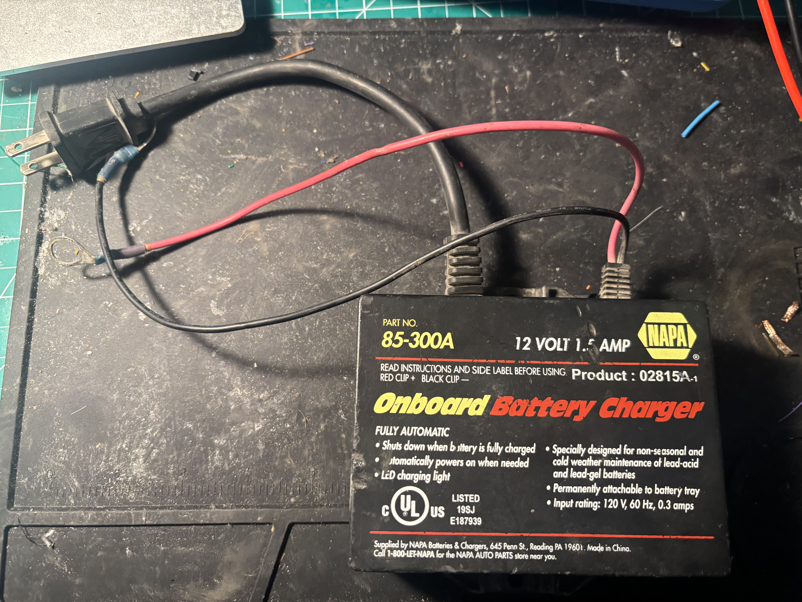
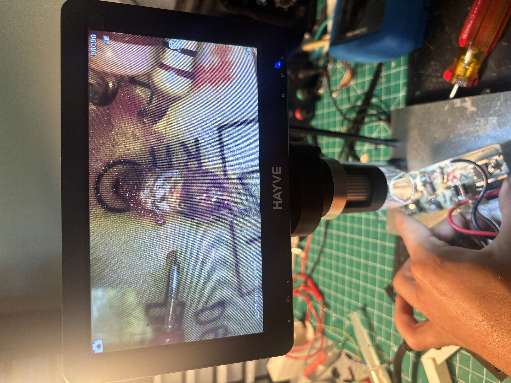
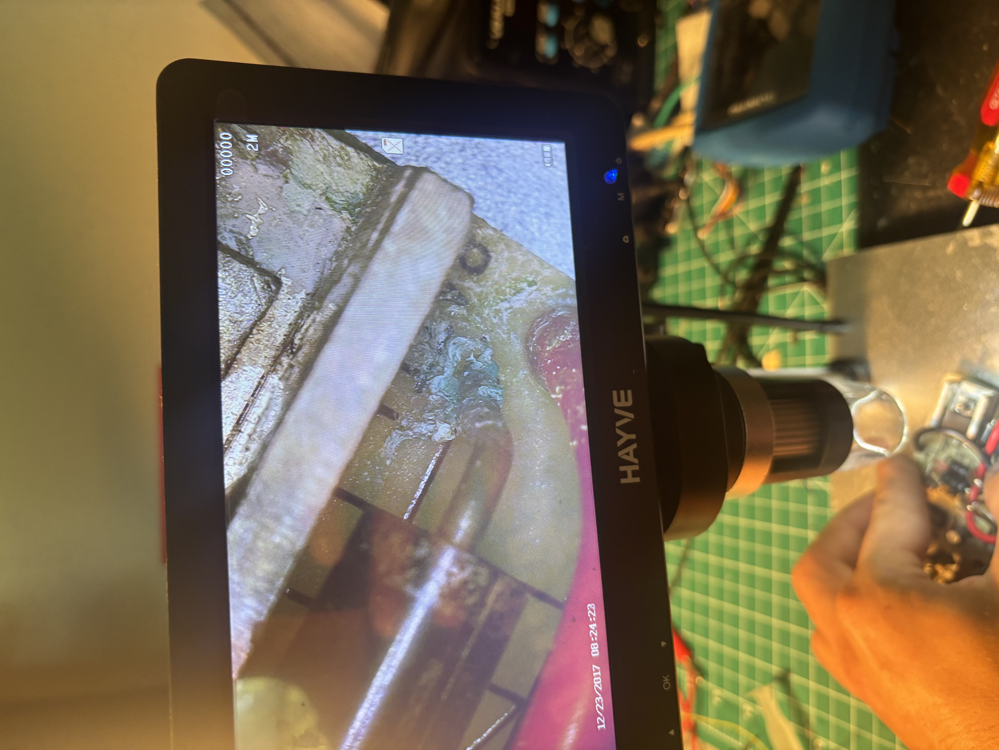
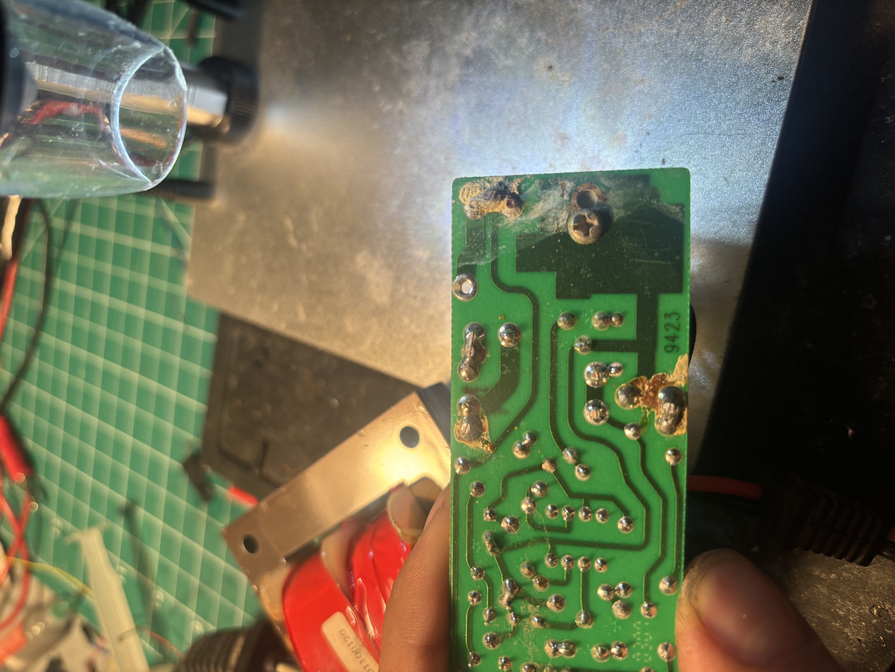
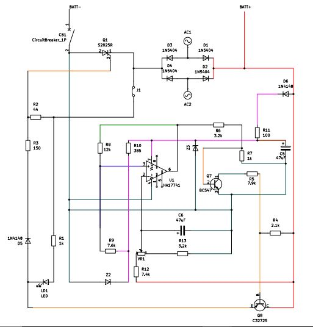
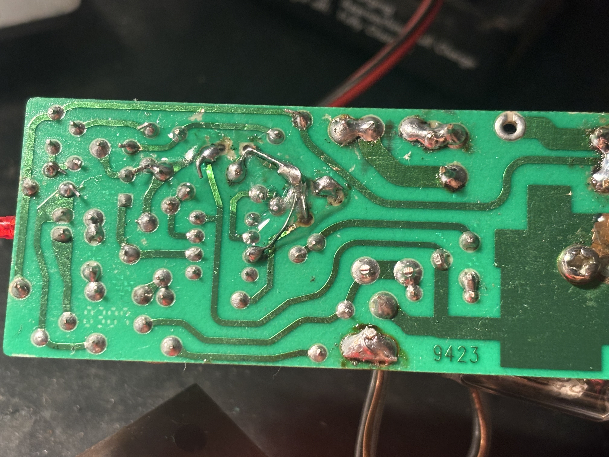

This 1.5 amp battery maintainer came into the shop I work at on an Edco walk-behind saw. The customer complained that it was no longer functioning and that they were going through a new battery every few months. I replaced it with a new one at their request and decided to give reviving the old one a try before sending it to it's fate at the landfill.

I used my hot air soldering gun and a scalpel to carefully separate the case and gain access to the circuit. With the board exposed, I began a visual inspection to hopefully identify any obvious signs of failure. I quickly found a couple strong clues.


The corrosion on the rectifier diodes and destroyed resistor seemed to imply to me that excessive heat was present on the rail for a longer period of time until something caused that resistor specifically to fail. From this point, I came up with a plan: isolate and test all the components that are fed directly off this rail, especially those that branch off into the circuit fed by the failed resistor. Given the age of this device and evidence thus far, I wanted to look specifically for cracked solder joints and lifted pads.

I discovered the pad for the failed resistor had almost completely lifted off the board. All the corrosion needed to be cleaned, lifted pads needed repair, and the rest of the circuit needed to be assessed as well. To start, I decided to trace and measure everything on the board to get a full picture of how the device operates, and then I'd be able to assess what other components I should evaluate outside of the obvious. With a schematic made and the rest of the components spec'd out, I could also begin to try to figure out what value replacement was needed for the burnt up resistor.

To figure out the correct replacement resistor value, I had to first evaluate what its role is. Its placed directly after a series diode, provides Vcc to the op-amp, and biases the Zener diode (Z3) as well. Admittedly, I was lacking the knowledge of why you would choose which value series resistor for a Zener. After some research, I found that the specs of the Zener could be plugged into the equation R1=VS−VZ/IZT+IL in order to answer this question.
However, I could not identify the model of Zener diode used for Z3 as the physical markings were gone. To get a good approximation I had to think about what the goal of this circuit is: we're maintaining battery voltage at ~12VDC. I measured 16VDC coming into the rail. The op-amp should draw only a few mA and most 12v Zeners I found had a knee current spec of 0.25 mA. Leaving some room for other components downstream, I decided a 100 ohm resistor would be best to use. Since the circuit wasn't operational, I couldn't reasonably measure the draw of each component on this branch. So, instead, I researched all the specs I could find for each part and estimated a total draw of ~40mA. Per Ohm's Law, a 100 ohm resistor would have roughly a 4 volt drop across it, with enough current flow to properly bias my Zener.
There was quite a bit of damage along the path of the series resistor, so I used a small piece of jumper wire to bridge everything across the bad trace and compensate for the destroyed pads. The series diode (D6) was shorted likely due to thermal runaway and op-amp supply filter (C5) measured out of spec, so I replaced these as well.

Now that I had all the new components installed, I could now hook it up to my bench supply for testing. Under proper operation, the charger should blink the LED as the battery approaches a full charge. So I hooked the leads up to my DC supply and adjusted the voltage to replicate different charge levels. Through this, I verified that the charger runs and stops at the correct voltages, meaning my calculations for the Zener series diode were more or less correct. If needed, I could adjust the VR pot that supplies the op-amp's V- input to get it perfect.
Repairing this board allowed me to go deeper into some components and topics I hadn't come across yet. I was able to gain an understanding of Zener diode characteristics in a DC circuit and some basic op-amp circuit design characteristics. The HA17741 is essentially just a comparator, so it was very helpful for me conceptually to assess its function in the application of a battery charger. We are sampling battery volts from the B+ rail into V- and tapping our V+ from the op-amp's output in order to keep the voltage in the correct range.